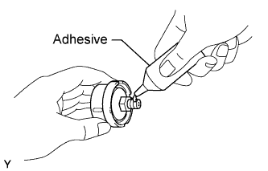
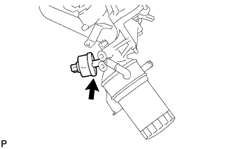

OIL PRESSURE SENSOR > INSTALLATION |
| 1. INSTALL OIL PRESSURE SENDER GAUGE ASSEMBLY |
 |
Apply adhesive to 2 or 3 threads of the sender gauge.
 |
Install the sender gauge.
Connect the sender gauge connector.
| 2. CHECK ENGINE OIL LEVEL |
Warm up the engine, then stop the engine and wait for 5 minutes.
Check that the engine oil level is between the low level and full level marks on the dipstick.
If low, check for leakage and add oil up to the full level mark.
| 3. INSPECT FOR OIL LEAK |
Start the engine. Make sure that there are no oil leaks from the area that was worked on.
| 4. INSTALL NO. 1 ENGINE UNDER COVER SUB-ASSEMBLY |
 |
Install the No. 1 engine under cover with the 10 bolts.
| 5. INSTALL FRONT FENDER SPLASH SHIELD SUB-ASSEMBLY RH |
| 6. INSTALL FRONT FENDER SPLASH SHIELD SUB-ASSEMBLY LH |
 |
Push in the clip indicated by the arrow in the illustration to install the fender splash shield.
Install the 3 bolts and screw.